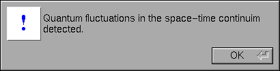
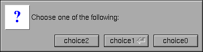
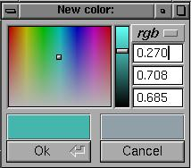
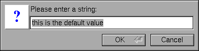
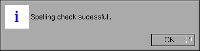
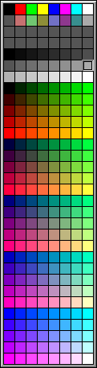

This appendix describes all of the fl_ functions. For a description of the FLTK classes, see Appendix A.
#include <FL/fl_ask.H>
void fl_alert(const char *, ...);
Same as fl_message() except for the "!" symbol.

#include <FL/fl_ask.H>
int fl_ask(const char *, ...);
Displays a printf-style message in a pop-up box with an "Yes" and "No" button and waits for the user to hit a button. The return value is 1 if the user hits Yes, 0 if they pick No. The enter key is a shortcut for Yes and ESC is a shortcut for No.
Note: Use of this function is strongly discouraged, and it will be removed in FLTK 2.0. Instead, use fl_choice() instead and provide unambiguous verbs in place of "Yes" and "No".
#include <FL/fl_ask.H>
void fl_beep(int type = FL_BEEP_DEFAULT)
Sounds an audible notification; the default type argument
sounds a simple "beep" sound. Other values for type may use
a system or user-defined sound file:
#include <FL/fl_ask.H>
int fl_choice(const char *q, const char *b0, const char *b1, const char *b2, ...);
Shows the message with three buttons below it marked with the strings b0, b1, and b2. Returns 0, 1, or 2 depending on which button is hit. ESC is a shortcut for button 0 and the enter key is a shortcut for button 1. Notice the buttons are positioned "backwards". You can hide buttons by passing NULL as their labels.

#include <FL/Enumerations.H>
Fl_Color fl_color_average(Fl_Color c1, Fl_Color c2, float weight);
Returns the weighted average color between the two colors. The red, green, and blue values are averaged using the following formula:
color = c1 * weight + c2 * (1 - weight)
Thus, a weight value of 1.0 will return the
first color, while a value of 0.0 will return the second color.
#include <FL/Fl_Color_Chooser.H>
int fl_color_chooser(const char *title, double &r, double &g, double &b); int fl_color_chooser(const char *title, uchar &r, uchar &g, uchar &b);
The double version takes RGB values in the range
0.0 to 1.0. The uchar version takes RGB values in
the range 0 to 255. The title argument specifies the
label (title) for the window.

fl_color_chooser() pops up a window to let the user pick an arbitrary RGB color. They can pick the hue and saturation in the "hue box" on the left (hold down CTRL to just change the saturation), and the brighness using the vertical slider. Or they can type the 8-bit numbers into the RGB Fl_Value_Input fields, or drag the mouse across them to adjust them. The pull-down menu lets the user set the input fields to show RGB, HSV, or 8-bit RGB (0 to 255).
This returns non-zero if the user picks ok, and updates the RGB values. If the user picks cancel or closes the window this returns zero and leaves RGB unchanged.
If you use the color chooser on an 8-bit screen, it will allocate all the available colors, leaving you no space to exactly represent the color the user picks! You can however use fl_rectf() to fill a region with a simulated color using dithering.
#include <FL/fl_draw.H>
Fl_Color fl_color_cube(int r, int g, int b);
Returns a color out of the color cube. r must be in the range 0 to FL_NUM_RED (5) minus 1. g must be in the range 0 to FL_NUM_GREEN (8) minus 1. b must be in the range 0 to FL_NUM_BLUE (5) minus 1.
To get the closest color to a 8-bit set of R,G,B values use:
fl_color_cube(R * (FL_NUM_RED - 1) / 255,
G * (FL_NUM_GREEN - 1) / 255,
B * (FL_NUM_BLUE - 1) / 255);
#include <FL/Enumerations.H>
Fl_Color fl_contrast(Fl_Color fg, Fl_Color bg);
Returns the foreground color if it contrasts sufficiently
with the background color. Otherwise, returns
FL_WHITE or FL_BLACK depending on
which color provides the best contrast.
#include <FL/fl_draw.H>
Fl_Color fl_cursor(Fl_Cursor cursor, Fl_Color fg, Fl_Color bg);
Sets the cursor for the current window to the specified shape
and colors. The cursors are defined in the <FL/Enumerations.H>
header file.
#include <FL/Enumerations.H>
Fl_Color fl_darker(Fl_Color c);
Returns a darker version of the specified color.
#include <FL/Fl_File_Chooser.H>
char *fl_dir_chooser(const char * message, const char *fname, int relative = 0);
The fl_dir_chooser() function displays a Fl_File_Chooser dialog so that the user can choose a directory.
message is a string used to title the window.
fname is a default filename to fill in the chooser with. If this is NULL then the last filename that was choosen is used. The first time the file chooser is called this defaults to a blank string.
relative specifies whether the returned filename should be relative (any non-zero value) or absolute (0). The default is to return absolute paths.
The returned value points at a static buffer that is only good until the next time fl_dir_chooser() is called.
#include <FL/Fl_File_Chooser.H>
char *fl_file_chooser(const char * message, const char *pattern, const char *fname, int relative = 0);
FLTK provides a "tab completion" file chooser that makes it easy to choose files from large directories. This file chooser has several unique features, the major one being that the Tab key completes filenames like it does in Emacs or tcsh, and the list always shows all possible completions.
fl_file_chooser() pops up the file chooser, waits for the user to pick a file or Cancel, and then returns a pointer to that filename or NULL if Cancel is chosen.
message is a string used to title the window.
pattern is used to limit the files listed in a directory to those matching the pattern. This matching is done by fl_filename_match(). Multiple patterns can be used by separating them with tabs, like "*.jpg\t*.png\t*.gif\t*". In addition, you can provide human-readable labels with the patterns inside parenthesis, like "JPEG Files (*.jpg)\tPNG Files (*.png)\tGIF Files (*.gif)\tAll Files (*)". Pass NULL to show all files.
fname is a default filename to fill in the chooser with. If this is NULL then the last filename that was choosen is used (unless that had a different pattern, in which case just the last directory with no name is used). The first time the file chooser is called this defaults to a blank string.
relative specifies whether the returned filename should be relative (any non-zero value) or absolute (0). The default is to return absolute paths.
The returned value points at a static buffer that is only good until the next time fl_file_chooser() is called.
#include <FL/Fl_File_Chooser.H>
void fl_file_chooser_callback(void (*cb)(const char *));
Sets a function that is called every time the user clicks a file in the currently popped-up file chooser. This could be used to preview the contents of the file. It has to be reasonably fast, and cannot create FLTK windows.
#include <FL/Fl_File_Chooser.H>
void fl_file_chooser_ok_label(const char *l);
Sets the label that is shown on the "OK" button in the file chooser. The default label (fl_ok) can be restored by passing a NULL pointer for the label string.
#include <FL/filename.H>
int fl_filename_absolute(char *to, int tolen, const char *from); int fl_filename_absolute(char *to, const char *from);
Converts a relative pathname to an absolute pathname. If from does not start with a slash, the current working directory is prepended to from with any occurances of . and x/.. deleted from the result. The absolute pathname is copied to to; from and to may point to the same buffer. fl_filename_absolute returns non-zero if any changes were made.
The first form accepts a maximum length (tolen) for the destination buffer, while the second form assumes that the destination buffer is at least FL_PATH_MAX characters in length.
#include <FL/filename.H>
int fl_filename_expand(char *to, int tolen, const char *from); int fl_filename_expand(char *to, const char *from);
This function replaces environment variables and home directories with the corresponding strings. Any occurrence of $X is replaced by getenv("X"); if $X is not defined in the environment, the occurrence is not replaced. Any occurence of ~X is replaced by user X's home directory; if user X does not exist, the occurrence is not replaced. Any resulting double slashes cause everything before the second slash to be deleted.
The result is copied to to, and from and to may point to the same buffer. fl_filename_expand() returns non-zero if any changes were made.
The first form accepts a maximum length (tolen) for the destination buffer, while the second form assumes that the destination buffer is at least FL_PATH_MAX characters in length.
#include <FL/filename.H>
const char *fl_filename_ext(const char *f);
Returns a pointer to the last period in fl_filename_name(f), or a pointer to the trailing nul if none is found.
#include <FL/filename.H>
int fl_filename_isdir(const char *f);
Returns non-zero if the file exists and is a directory.
#include <FL/filename.H>
int fl_filename_list(const char *d, dirent ***list, Fl_File_Sort_F *sort = fl_numericsort);
This is a portable and const-correct wrapper for the scandir() function. d is the name of a directory; it does not matter if it has a trailing slash or not. For each file in that directory a "dirent" structure is created. The only portable thing about a dirent is that dirent.d_name is the nul-terminated file name. An array of pointers to these dirent's is created and a pointer to the array is returned in *list. The number of entries is given as a return value. If there is an error reading the directory a number less than zero is returned, and errno has the reason; errno does not work under WIN32.
The name of directory always ends in a forward slash '/'.
The sort argument specifies a sort function to be used when on the array of filenames. The following standard sort functions are provided with FLTK:
You can free the returned list of files with the following code:
for (int i = return_value; i > 0;) {
free((void*)(list[--i]));
}
free((void*)list);
#include <FL/filename.H>
int fl_filename_match(const char *f, const char *pattern);
Returns non-zero if f matches pattern. The following syntax is used by pattern:
#include <FL/filename.H>
const char *fl_filename_name(const char *f);
Returns a pointer to the character after the last slash, or to the start of the filename if there is none.
#include <FL/filename.H>
int fl_filename_relative(char *to, int tolen, const char *from); int fl_filename_relative(char *to, const char *from);
Converts an absolute pathname to an relative pathname. The relative pathname is copied to to; from and to may point to the same buffer. fl_filename_relative returns non-zero if any changes were made.
The first form accepts a maximum length (tolen) for the destination buffer, while the second form assumes that the destination buffer is at least FL_PATH_MAX characters in length.
#include <FL/filename.H>
char *fl_filename_setext(char *to, int tolen, const char *ext); char *fl_filename_setext(char *to, const char *ext);
Replaces the extension in to with the extension in ext. Returns a pointer to to.
The first form accepts a maximum length (tolen) for the destination buffer, while the second form assumes that the destination buffer is at least FL_PATH_MAX characters in length.
#include <FL/fl_draw.H>
Fl_Color fl_gray_ramp(int i);
Returns a gray color value from black (i == 0) to white (i == FL_NUM_GRAY - 1). FL_NUM_GRAY is defined to be 24 in the current FLTK release. To get the closest FLTK gray value to an 8-bit grayscale color 'I' use:
fl_gray_ramp(I * (FL_NUM_GRAY - 1) / 255)
#include <FL/fl_ask.H>
const char *fl_input(const char *label, const char *deflt = 0, ...);
Pops up a window displaying a string, lets the user edit it, and return the new value. The cancel button returns NULL. The returned pointer is only valid until the next time fl_input() is called. Due to back-compatability, the arguments to any printf commands in the label are after the default value.

#include <FL/Enumerations.H>
Fl_Color fl_lighter(Fl_Color c);
Returns a lighter version of the specified color.
#include <FL/fl_ask.H>
void fl_message(const char *, ...);
Displays a printf-style message in a pop-up box with an "OK" button, waits for the user to hit the button. The message will wrap to fit the window, or may be many lines by putting \n characters into it. The enter key is a shortcut for the OK button.

#include <FL/fl_ask.H>
void fl_message_font(Fl_Font fontid, uchar size);
Changes the font and font size used for the messages in all the popups.
#include <FL/fl_ask.H>
Fl_Widget *fl_message_icon();
Returns a pointer to the box at the left edge of all the popups. You can alter the font, color, label, or image before calling the functions.
#include <FL/fl_ask.H>
const char *fl_password(const char *label, const char *deflt = 0, ...);
Same as fl_input(), except an Fl_Secret_Input field is used.
#include <FL/Fl_Shared_Image.H>
void fl_register_images();
Registers the extra image file formats that are not provided
as part of the core FLTK library for use with the Fl_Shared_Image
class.
This function is provided in the fltk_images
library.
#include <FL/fl_draw.H>
Fl_Color fl_rgb_color(uchar r, uchar g, uchar b); Fl_Color fl_rgb_color(uchar g);
Returns the 24-bit RGB color value for the specified 8-bit RGB or grayscale values.
#include <FL/fl_show_colormap.H>
Fl_Color fl_show_colormap(Fl_Color oldcol)
fl_show_colormap() pops up a panel of the 256 colors you can access with fl_color() and lets the user pick one of them. It returns the new color index, or the old one if the user types ESC or clicks outside the window.
